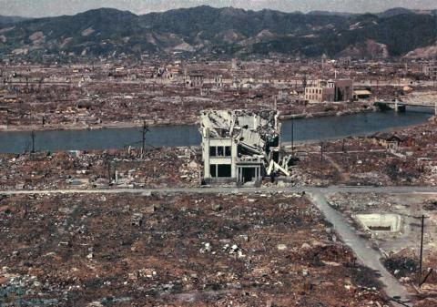
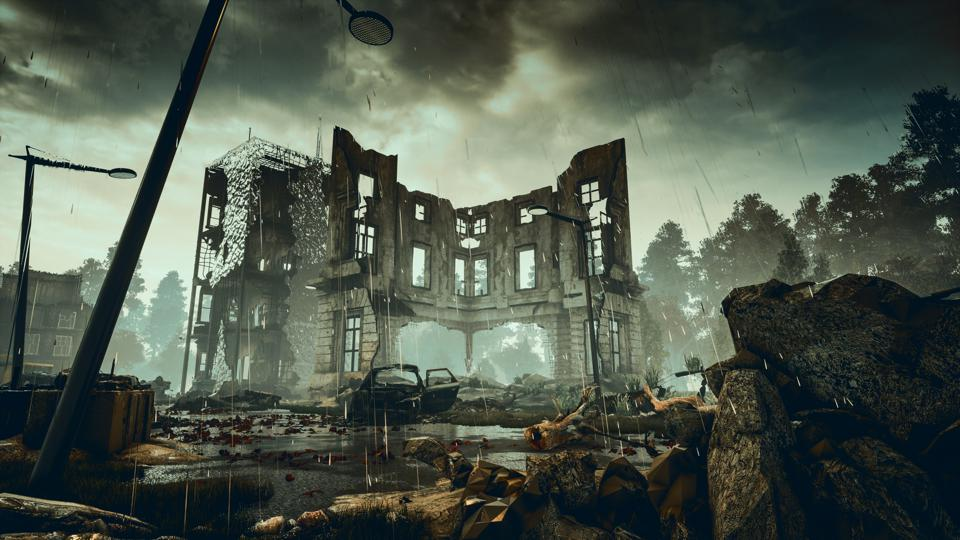

Nuclear Warfare Guide
Kim Jong Un and Donald Trump days before the Nuclear Showdown.
Photo of the first Nuke in America. This was the start of a huge firefight both of them using hundreds of missiles.
The aftermath of the war between Donald and Kim that spelled the end of the world.
This left the world in tatters whole countries destroyed. Buildings destroyed. Billions of people killed. The whole world being nuclear waste.

From the billions deceased their bodies began to come back alive turning them into mutant zombies. Braindead creatures that only think about their next meal.
But humanity rose and we want you to come help us make the steps of righting the wrongs of past humans.